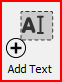
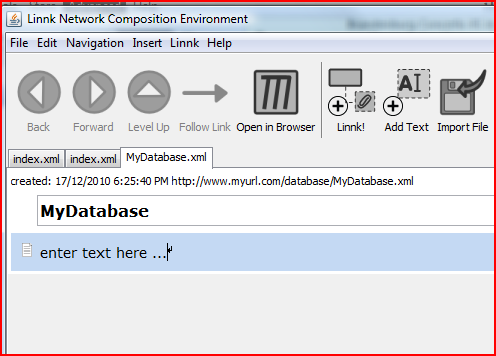
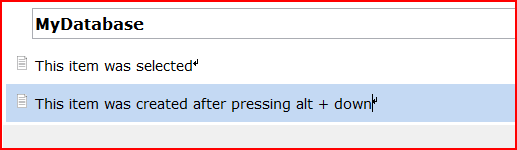

There are basically two ways of adding text to a Linnk document: (1) By using the menu or icon (2) by using keyboard shortcuts. While using the icons might be an easily memorable way, using keyboard shortcuts greatly enhances the productivity in working with Linnk.
Using the Icon:

Adds a text to the bottom of a document or below the currently selected document. The screenshot below depicts the document created before after pressing the button [Add Text]

Just select the text and start typing (Hint: you can use Ctrl + a (on Windows) to select the entire text and your typing will automatically remove the default text 'enter text here ...')
Keyboard shortcuts:
Alt + Down: Inserts a text BELOW the currently selected item
Alt + Up: Inserts a text BEFORE the currently selected item
(Note: you can select items by simply clicking on them)
